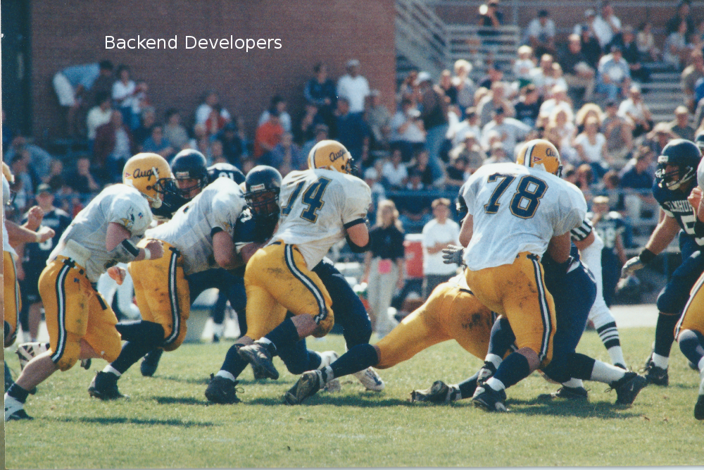

Frontend 'vs' Backend
Getting the Right Mix
Created by Bob Paulin / @bobpaulin
About Me
- Independent Consultant
- Business Enablement
- Web Centric
A long time ago I created my first website and I learned several things
- College students love seeing pictures of their friends doing stupid things at parties
- Photoshop can be used to make funny pictures even funnier
- The Dean will not find any of these pictures as funny as you do
What this talk is
- Using Frontend and Backend Frameworks Together
- How developers work together
- Advantages and disadvantages of architectures
- Some empirical data on architecture performance
What this talk is NOT
- Deep Dive into web frameworks
- THE answer on which architecture is better
How did we get here?
- Complexity
- Corporate Culture
- Developer Aptitudes
Backend developer

The typical backend developer generally
- Focus on the server side
- Data Storage and Retrieval
- System Architecture
- Does it work?
Frontend developer

The typical frontend developer generally
- Client/Browser focused
- Closer to creative/design
- Does it look right?
Does this model actually work?
Challenges with Frontend/Backend Teams
Competing requirements
Frequent Handoffs
Frameworks often couple frontend and backend technolgies
Another way to think about the problem...
An American Football analogy
Frontend Developers = Offensive Backs

Frontend Developers = Offensive Backs
- Score Points with Customers
- Work is highly visible
- Can be limited by poor play at other positions
- Often get the biggest share of blame when things go wrong and praise when things go right
Backend Developers = Offensive Line
Backend Developers = Offensive Line
- Enable other positions to do great work
- Work is not usually visible
- Mistakes often have a cascading effect
- Generally only get blamed when things go wrong. When things go right .... well things are just suppose to work all the time right?
Ok enough about your people problems lets look at some code already!
3 different approaches to the same web site
Requirements - A book review site
- Allow users to select keyword preferences
- Allow users to view and post review comments about a specific book
- Should use responsive design. Because well that's the hot new thing right?
Test Criteria
- Homepage View
- Add a New Book Preference
- Open a Review
- Add A Comment
A Backend Recipe
- Spring MVC
- Spring Data
- MongoDB
- Apache Tomcat
- Apache Http Server
- JSP
- Twitter Bootstrap
- WRO4J
- Amazon Cloudfront (CDN)
Design
- Cache Google Api Response for Books and Book Search
- Consolidate and minify CSS and JS using WRO4J
- Page turn between Homepage and Reviews
- Page can't be cached but static resources can
A Frontend Recipe
- Brunch
- ChaplinJS
- CoffeeScript
- Handlebars
- Node.js
- Apache CXF
- Spring Data
- MongoDB
- Apache Tomcat
- Apache Http Server
- Twitter Bootstrap
- Amazon Cloudfront (CDN)
Design
- All Services are done through AJAX
- Apache CXF Provides Restful Services(Consumers/Producers) JAX-RS
- Single Page Application Behavior via Chaplin
- Node.js but only for Brunch Compilation
- More Caching options based on data: Volitile vs Static
A Mixed Recipe
Frontend Tech
- Backbone
- CoffeeScript
- Handlebars
- Twitter Bootstrap
Backend Tech
- Spring MVC
- Handlebars.java
- WRO4J
- Apache CXF
- Spring Data
- MongoDB
- Apache Tomcat
- Apache Http Server
- Amazon Cloudfront (CDN)
Design
- Some Services are done through AJAX others on Serverside
- Apache CXF Provides Restful Services(Consumers/Producers) JAX-RS
- Page turn between Homepage and Reviews
- Page actions do not require page turns
- Templates are shared between frontend and backend
- Book Searches are cached with data uris
Homepage Results Small Data

Add Preferences Results Small Data
Open Review Results Small Data
Add Comment Results Small Data

Comparative Results Small Data

Combined Results Small Data
Homepage Results Big Data
Add Preferences Results Big Data

Open Review Results Big Data

Add Comment Results Big Data

Comparative Results Big Data
Combined Results Big Data
Backend Summary
Bob's Code
for(String curString: theList)
{
System.out.println("The Item " + curString);
}